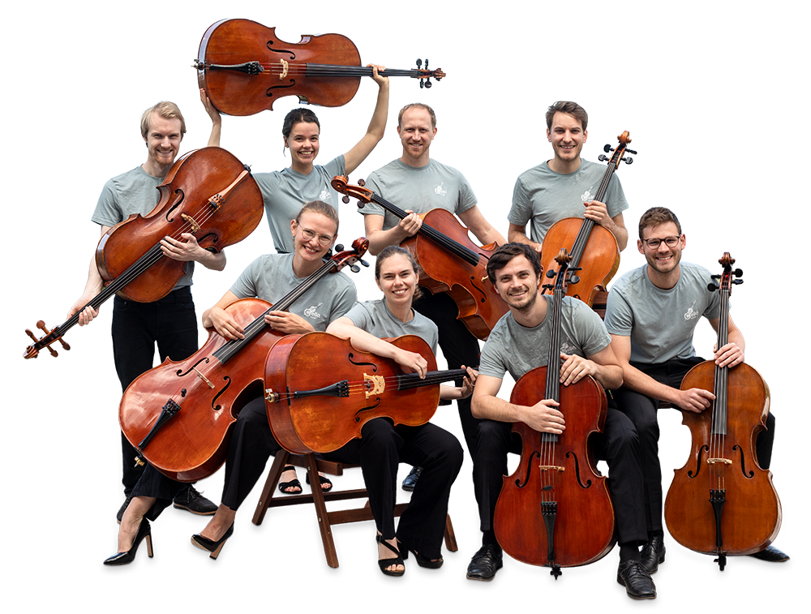

Die Cello Band –
Cello neu erleben
Begleite uns auf einer musikalischen Reise voller Innovation und Kreativität durch Karlsruhe und darüber hinaus. Wir schaffen eine frische, moderne Interpretation von Cello-Musik. Unsere Auftritte sind eine Fusion aus klassischen Klängen und zeitgenössischer Energie, die das Publikum in ihren Bann ziehen. Von Gala-Veranstaltungen bis hin zu privaten Feiern bieten wir flexible Buchungsmöglichkeiten für jeden Anlass. Tauche ein in unsere Welt und erlebe das Cello wie nie zuvor!
Mehr erfahrenÜber uns
Die Cello Band vereint vier leidenschaftliche Musikerinnen und Musiker, die gemeinsam die Grenzen des klassischen Cellospiels neu definieren. Unsere Musik verbindet Tradition mit Moderne – von Bach bis Pop, von kammermusikalischer Stille bis hin zu mitreißenden Arrangements.
Gegründet mit einer gemeinsamen Vision: Cello-Musik zugänglich, aufregend und unvergesslich zu machen – für jedes Publikum, auf jeder Bühne, in jedem Moment.

Gründung
Die Cello.Band wurde im Frühjahr 2019 von vier Cellisten des KIT-Sinfonieorchesters in Karlsruhe gegründet. Erste Auftritte fanden im selben Jahr bei der Campus-Klassik-Bühne, dem Uni-Fest am KIT und dem Chaos Computer Club in Karlsruhe statt. 2020 wurde die Besetzung um zwei weitere feste Mitglieder aus dem KIT-Sinfonieorchester ergänzt.
Durch berufsbedingten Wegzug einiger Musiker erhielt das Ensemble im Herbst 2023 erneut Zuwachs, aktuell besteht die Cello.Band aus fünf CellistInnen, drei davon gehören zu den Gründungsmitgliedern.
Was wir spielen
Seit Ihrem Bestehen erarbeitet sich die Cello.Band fortwährend ein umfangreiches und breit gefächertes Repertoire. Auf dem Programm stehen neben klassische Werke aller Epochen lateinamerikanische Tänze sowie Arrangements aus Bereichen der Film-, Rock- und Popmusik.
Auftritte
Seit 2020 tritt die Cello.Band sowohl bei öffentlichen als auch bei diversen privaten Veranstaltungen, z.B. Hauskonzerten und Hochzeiten, im Karlsruher Raum auf. Dazu gehört unter anderem die regelmäßige Beteiligung an der musikalischen Gestaltung der Gottesdienste in der evangelischen Stadtkirche Karlsruhe.
In den Sommermonaten verlagert das Ensemble seine musikalische Aktivität gerne auf die Straße und ist bevorzugt vor dem Karlsruher Schloss oder dem Kammertheater Karlsruhe zu finden. Auf mehrtägigen Straßenmusik-Trips waren die Musiker aber auch bereits in Zürich, München und Baden-Baden zu hören.
Repertoire
Von klassischen Meisterwerken bis zu modernen Klängen - unsere musikalische Reise vereint Leidenschaft und Virtuosität.
News
Von neuen Konzerten bis zu spannenden Projekten – hier findest du alle aktuellen Neuigkeiten rund um die Cello Band.
Kontakt & Buchung
Ihr möchtet uns für euer Event buchen oder habt Fragen? Wir freuen uns auf eure Nachricht!